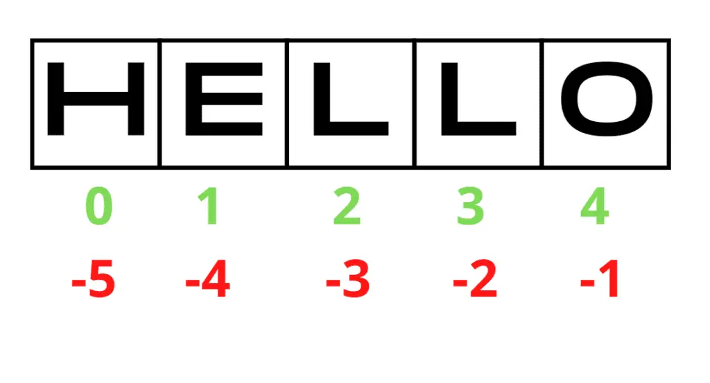

Table of Contents
Introduction
What Are Python Strings?
How to Create Strings in Python?
How to Access Characters in Python Strings?
String Slicing
How to Modify or Change a String in Python?
String Operators in Python
String formatting in Python
f-strings
Built-in Python String Functions
Built-in Python String Methods
If-Statements with Strings in Python
Iterating Through Strings in Python
Python String Exercises for Beginners
Conclusion
You May Also Enjoy
Introduction¶
This tutorial will focus on the Python string data type.
Python provides a rich set of built-in operators, functions, and methods for working with strings. We will learn how to access some elements of strings and call various methods to manipulate, format, and modify strings using Python.
What Are Python Strings?¶
A string in Python is an object containing sequences of character data.
How to Create Strings in Python?¶
We must enclose characters in single quotes, double quotes, or even triple quotes to create strings. Triple quotes in Python are used to represent multi-line strings and docstrings.
# defining strings in Python
# using single quotes
my_string = 'String'
# using function type() to get the data type of my_string,
# and printing the string
print(type(my_string))
print(my_string)
# using double quotes
my_string = "String"
print(type(my_string))
print(my_string)
# using triple quotes
my_string = '''String'''
print(type(my_string))
print(my_string)
# strings with triple quotes can be multi-line string
my_string = """Multilinestrings
are
cool"""
print(type(my_string))
print(my_string)
If we run this code, we see that the output and the data type are the same, no matter what quotes we used:
<class 'str'>
String
<class 'str'>
String
<class 'str'>
String
<class 'str'>
Multilinestrings
are
cool
How to Access Characters in Python Strings?¶
In Python, we can access individual elements of a string using the indexing method, and the index always starts at 0. However, we can also use negative indexing to access characters from the end of the string.
For example, -1 refers to the last character, -2 refers to the pre-last character, and so on.

# accessing string characters in Python
my_str = 'hello'
print('my_str =', my_str)
# accessing first character
print('my_str[0] =', my_str[0]) # using index 0
print('my_str[-5] =', my_str[-5]) # using negative index -5
# accessing last character
print('my_str[-1] =', my_str[-1]) # using negative index -1
print('my_str[4] =', my_str[4]) # using index 4
Output:
my_str = hello
my_str[0] = h
my_str[-5] = h
my_str[-1] = o
my_str[4] = o
Attempting to access a character outside the index range will raise an IndexError, and trying to enter a non-integer number as an index or any data type other than an integer will result in a TypeError.
my_str = 'hello'
# trying to get character using index out of range
print('string[19] =', my_str[19])
# trying to get character using float index
print('string[1.9] =', my_str[1.9])
Output:
  |
String Slicing¶
We can access a range of characters in a string using the slicing method. Slicing in a string is done with the slicing operator (colon).
# creating a string
my_str = "hello"
print("Initial String: ")
print(my_str)
# printing 2nd to 4th character
print("\nSlicing characters from 2-4: ")
print(my_str[2:4])
# printing characters between 5th and 2nd last character
print("\nSlicing characters between 5th and 2nd last character: ")
print(my_str[-5:-2])
Output:
Initial String:
hello
Slicing characters from 2-4:
ll
Slicing characters between 5th and 2nd last character:
hel
How to Modify or Change a String in Python?¶
In Python, we cannot update or delete string elements like in lists since strings are immutable, and trying to do so will cause an error. However, we can delete the entire string using del or create a new string with the same name to replace it completely.
Let’s try to change the character in the string:
my_str = "hello"
my_str[1] = "i"
As we can see in the output it causes a TypeError:
 |
Now let us try to replace the whole string with another:
my_str = "hello"
print("My string before:", my_str)
my_str = "hi"
print("\nMy string after:", my_str)
Output:
My string before: hello
My string after: hi
Deleting certain elements using indexes is not supported as well:
my_str = "hello"
del my_str[1]
Output:
 |
However, we can delete the string itself:
my_str = "hello"
del my_str
print(my_str)
You can see in the output that we got NameError which means that our variable my_str doesn’t exist:
 |
String Operators in Python¶
String operators in Python are different types of operators that can be applied to strings. Below you will find a list of operators for strings:
| Operation | Operator |
| Assigning | = |
| Concatenation | + |
| String repetition | * |
| String slicing | [] |
| String comparison | == != |
| Membership checking | innot in |
| Escaping sequence | \ |
| String formatting | %{} |
Let’s look at how to perform some operations that we did not consider from the list:
# Concatenation
str1 = "hello "
str2 = "world"
string = str1 + str2
print("This is concatenation: ", string)
# String repetition
str1 = "hello "
print("\nThis is string repetition: ", str1 * 5)
# String comparison
str1 = "hello"
str2 = "hello,world"
str3 = "hello,world"
str4 = "world"
print("\nThis is string comparison:")
print("'hello' and 'world' are the same? ",str1==str4)
print("'hello,world' and 'hello,world' are the same? ", str2 == str3)
print("'hello' and 'world' are different? ",str1!=str4)
print("'hello,world' and 'hello,world' are different? ", str2 != str3)
# Membership checking
str1 = "helloworld"
print("\nThis is memebership checking:")
print("Is 'w' in 'helloworld'? ", "w" in str1)
print("Is 'W' in 'helloworld'? ", "W" in str1)
print("Is 't' in 'helloworld'? ","t" in str1)
print("'t' is not in 'helloworld'? ", "t" not in str1)
print("Is 'hello' in 'helloworld'? ","hello" in str1)
print("Is 'Hello' in 'helloworld'? ","Hello" in str1)
print("'hello' is not in 'helloworld'? ","hello" not in str1)
# Escaping sequence
string = "\nHello,\"world\""
print("\nA string with escape sequence:", string)
Output:
This is concatenation: hello world
This is string repetition: hello hello hello hello hello
This is string comparison:
'hello' and 'world' are the same? False
'hello,world' and 'hello,world' are the same? True
'hello' and 'world' are different? True
'hello,world' and 'hello,world' are different? False
This is memebership checking:
Is 'w' in 'helloworld'? True
Is 'W' in 'helloworld'? False
Is 't' in 'helloworld'? False
't' is not in 'helloworld'? True
Is 'hello' in 'helloworld'? True
Is 'Hello' in 'helloworld'? False
'hello' is not in 'helloworld'? False
A string with escape sequence:
Hello,"world"
String formatting in Python¶
Python gives us the ability to convert objects to printable strings automatically. There are two built-in ways to do this: formatted string literals or “f-strings” and str.format() function.
f-strings¶
A formatted string literal is prefixed with ‘f’. Any text outside curly braces’ {}’ is output directly as a string.
name = "Alex"
age = 19
marks = 27.56
print(f'I\'m {name}, I am {age} and my subject mark is {marks}')
Output:
I'm Alex, I am 19 and my subject mark is 27.56
To insert another type of variable along with the string, the “%” operator can also be used.
“%” is a prefix to another character, indicating the data type of value we want to insert along with the Python string.
Below is a list of string formatting specifiers:
| Operator | Description |
| %d | Signed decimal integer |
| %u | Unsigned decimal integer |
| %c | Character |
| %s | String |
| %f | Floating-point real number |
Let’s try to use all these specifiers to format a string:
name = "Alex"
age = 19
marks = 27.56
my_str = 'I\'m %s,my age is %d and my subject mark is %f' % (name, age, marks)
print(my_str)
Output:
I'm Alex,my age is 19 and my subject mark is 27.560000
To learn more about Python String formatting, see our article, Python Format Strings: Beginner to Expert.
Built-in Python String Functions¶
Python provides many built-in functions for working with strings. Here are a few of these built-in functions that we’ll look at in a moment:
| Function | Description |
| len() | Determines the length of the string |
| str() | Converts the specified value into a string. |
| chr() | Converts an integer to its Unicode character and returns it. |
| ord() | Takes string argument of a single Unicode character and returns its integer Unicode code point value. |
| type() | This function returns the type of an object. |
Let us now practice these built-in functions:
# len() function returns a length of the string
my_string = "Incomprehensibilities"
print("The length of the word is", len(my_string))
# str() converts integer to string
itisnot_str = 99
# type() returns the type of the variable
print("\nThe type before conversion -", type(itisnot_str))
itisnot_str = str(itisnot_str)
print("The type after conversion - ", type(itisnot_str))
# chr() converts integers unicode to string character
char = 99
print("\n'char' is", char,", and it's type before -", type(char))
char = chr(char)
print("'char' is", char,", and it's type after -",type(char))
# ord() converts a string to integer
char = "c"
print("\n'char' is", char,", and it's type before -", type(char))
char = ord(char)
print("'char' is", char,", and it's type after -",type(char))
Output:
The length of the word is 21
The type before conversion - <class 'int'>
The type after conversion - <class 'str'>
'char' is 99 , and it's type before - <class 'int'>
'char' is c , and it's type after - <class 'str'>
'char' is c , and it's type before - <class 'str'>
'char' is 99 , and it's type after - <class 'int'>
Built-in Python String Methods¶
Python offers many built-in methods to perform various operations on a string. This table lists several of the most common methods you may need when working with strings in Python.
| Method | Description |
| capitalize() | Converts first character to capital letter |
| lower() | Returns lowercased string |
| upper() | Returns uppercased string |
| encode() | Returns encoded string of given string |
| replace() | Replaces substring inside |
| split() | Splits string from left |
| join() | Returns a concatenated string |
| title() | Returns a title cased string |
| index() | Returns index of a substring |
Let’s take a closer look at some of the methods on this list:
# using upper() method
my_str = "hello world"
print("Before:",my_str)
my_str = my_str.upper()
print("After:",my_str,'\n')
# using join() ] method
text = ['Good', 'morning,', 'my', 'world', '!']
print(text)
print(' '.join(text),'\n')
# using title() method
text = 'HELLO, i wanna hAve friends!'
print(text)
print(text.title())
print()
# using replace() method
text = 'good, good morning'
print(text)
print(text.replace('good', 'bad'))
Output:
Before: hello world
After: HELLO WORLD
['Good', 'morning,', 'my', 'world', '!']
Good morning, my world !
HELLO, i wanna hAve friends!
Hello, I Wanna Have Friends!
good, good morning
bad, bad morning
If-Statements with Strings in Python¶
Let’s look at the use of strings in if-statements.
# This program compares two strings.
# using innput() to get input from the user
password = input('Enter the password: ')
# checking whether entered word is the same with the word 'hello'
if password == 'hello':
print("Password accepted")
else:
print("Sorry, that is the wrong password")
Output:
Enter the password: hello
Password accepted
Enter the password: world
Sorry, that is the wrong password
Note that you can use the getpass module to get a password without echoing the input.
Iterating Through Strings in Python¶
In Python, you can perform many different types of operations on a string. Let’s explore the Python method for iterating through characters in a string.
# Python program to iterate over characters of a string
# using for loop to print dash between each character
str_name = " HELLO WORLD"
for element in str_name:
print(element, end = '-')
print("\n")
# iterating using for loop to print each character
str_name = "HELLO WORLD"
for element in range(0, len(str_name)):
print(str_name[element])
Output:
-H-E-L-L-O- -W-O-R-L-D-
H
E
L
L
O
W
O
R
L
D
 |
That was the end of our tutorial. Now go through the exercises to support what you have learned.
Python String Exercises for Beginners¶
1. Display this phrase as a title: “hELLo WoRlD!”
txt = "hELLo WoRlD!"
print(txt.title())
2. Change the string “wooow” into uppercase.
x = 'wooow'
x = x.upper()
print(x)
3. Split this string: “Hello World, Good Morning!”
my_str = "Hello World, Good Morning!"
print(my_str.split())
4. Create a program that displays each substring of the following string split at the dashes: “Hello-world-!-Good-morning-!”
my_str = "Hello-world-!-Good-morning-!"
print("Original string:", my_str)
split_str = my_str.split("-")
print("\nDisplaying each substring:\n")
for item in split_str:
print(item)
5. Return the string without any whitespace at the beginning or the end: “Hello World”
txt = " Hello World "
x = txt.strip()
print(x)
6. Use indexes and slicing to output the first one character, the last one character, everything except the first one character, everything except the last one character, and everything between the first and the fifth characters of the following string: “Hello World”
x = "Hello World"
print("String:", x)
# first one character
first_char = x[:1]
print("First character:", first_char)
# last one character
last_char = x[-1:]
print("Last Character:", last_char)
# Everything except the first one character
except_first = x[1:]
print("Except first char:", except_first)
# everything except the last one character
except_last = x[:-1]
print("Except first char:", except_last)
# everything between first and 5th characters
between = x[0:4]
print("Between 1st and 5th character:", between)
7. Concatenate string and integer objects: 321 and “hello”
n = 321
s = "hello"
string = str(n) + s
print(string)
8. Add one string to another using the + operator and the join() method: “Hello” and “World”
# using + operator
str1 = "Hello"
str2 = "World"
str3 = str1 + str2
print(str3)
# using join()
join_str = "".join((str1, str2))
print(join_str)
9. Сompare these strings: “Hello”, “Hello” and “World”
str1 = "Hello"
str2 = "Hello"
str3 = "World"
print("Are str1 and str2 are the same? ", str1 == str2)
print("Are str1 and str3 are the same? ", str1 == str3)
print("Are str2 and str3 are the same? ", str2 == str3)
10. Use replace() method to change the word “World “in “Hello World” to “People”.
txt = "Hello World!"
print("Text before: ", txt)
print("Text after: ", txt.replace("World", "People"))
11. Print “I am _ years old” using format(). Instead of dashes, insert the value of the variable age = 17.
age = 17
txt = "I am {} years old."
print(txt.format(age))
12. Print the string “‘hello’” ten times on separate lines.
my_str = "'hello'\n"
print(my_str*10)
13. Use the find() method to find out the index of the character “n” in the Python string “queen”
queen_str = "queen"
print(queen_str.find("n"))
14. Use the escaping sequence operator to print “I answered, “That’s my dog!” using single quotes, double quotes, and triple quotes.
# using single quotes
print('I answered, "That\'s my dog!"')
# using double quotes
print("I answered, \"That\'s my dog!")
# using triple quotes
print('''I answered, "That\'s my dog!"''')
15. Use a for loop to iterate and find the number of letter “L” s in the phrase “HELLO, WORLD”.
count = 0
for letter in "HELLO WORLD":
if(letter == 'L'):
count += 1
print("There are ",count,"letters 'L's in the phrase 'HELLO WORLD'")
Use the escaping sequence operator to print “I answered, “That’s my dog!” using single quotes, double quotes, and triple quotes.
Use for loop to iterate and find the number of “l” in the phrase “Hello World”.
Conclusion¶
In this tutorial, we’ve covered in detail what strings are in Python and the different mechanisms for working with them. Including string operators, built-in functions and methods, indexing, and slicing.
Make sure to go through and solve all of these exercises. This will strengthen your theoretical knowledge in practice.